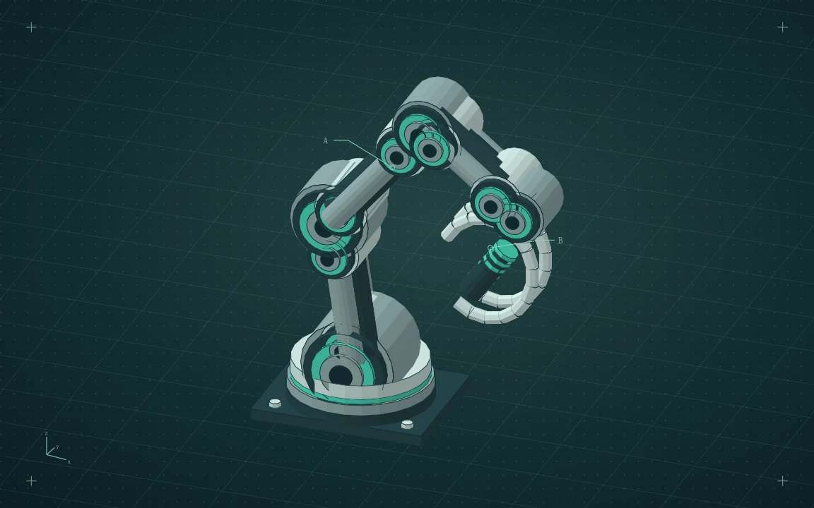

七自由度力反馈遥操作7-DoF Haptic Teleoperation
操作者通过外骨骼控制 Flexiv 机械臂。夹爪接触物体时，末端力和力矩通过主端反馈给操作者。An operator guides a Flexiv arm through an exoskeleton and feels contact forces and torques through the master device.

从人的手臂到机械臂From the operator to the robot
遥操作有两个方向。主端要把操作者的运动传给机械臂，夹爪接触物体时，操作者还需要得到反馈。我在这套平台上把七自由度外骨骼和 Flexiv 机械臂连起来。Teleoperation runs in two directions. Motion travels from the operator to the robot, and information about contact travels back. On this project I worked with a seven-degree-of-freedom exoskeleton and a Flexiv arm.
我带领小组搭建主从平台，负责运动映射、力反馈控制、夹爪集成和多模态数据记录。I led the team that built the platform and worked on motion mapping, force feedback, gripper integration, and multimodal recording.
把人的运动映射到机械臂Map the operator’s motion
建立七自由度主端的运动学模型，将主端位姿映射到 Flexiv 末端。结合导纳控制与重力补偿，通过标定实验调整跟随和反馈响应。I modelled the seven-degree-of-freedom master, mapped its pose to the Flexiv end effector, and tuned admittance control and gravity compensation through calibration experiments.
处理夹爪与物体的接触Control contact at the gripper
接入力反馈与视触觉夹爪，编写接触检测、抓力调节和抓取释放逻辑，在真机上联调异常恢复流程。I integrated haptic and vision-based tactile grippers, implemented contact detection and grasp-force regulation, and tested grasp, release, and fault recovery on hardware.
记录一次完整操作Record an entire interaction
用 Python 多进程和共享内存组织控制与记录，关联机器人状态、力和力矩、夹爪状态、触觉图与 RGB-D 图像，并检查记录完整性。A Python multiprocessing framework uses shared memory to link robot state, force and torque, gripper state, tactile images, and RGB-D frames. Images are saved asynchronously and recordings checked for completeness.
跟随、接触与记录Following motion and recording contact
真机联调覆盖主从运动跟随、接触力反馈、抓取和释放。每次操作的多模态记录可用于回看接触前后的机器人与夹爪状态。Hardware tests covered motion tracking, contact feedback, grasping, and release. The recordings make it possible to inspect the robot and gripper states before and after contact.